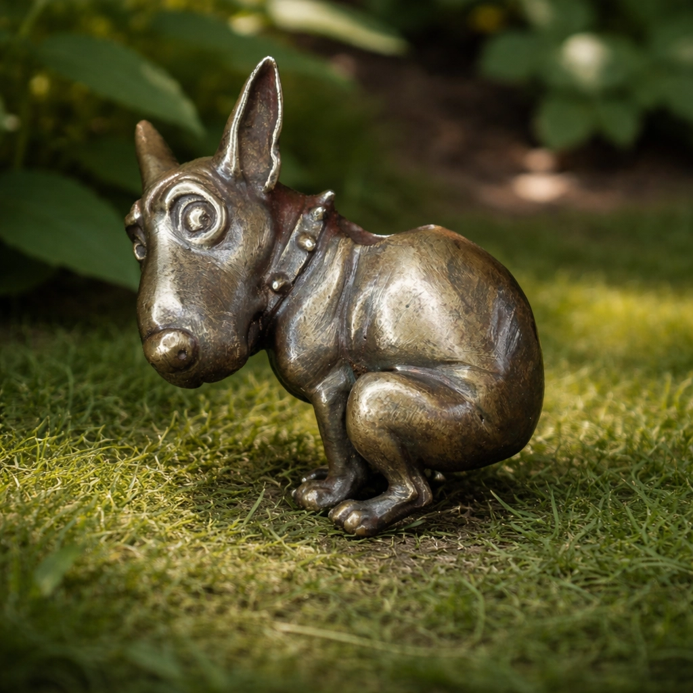
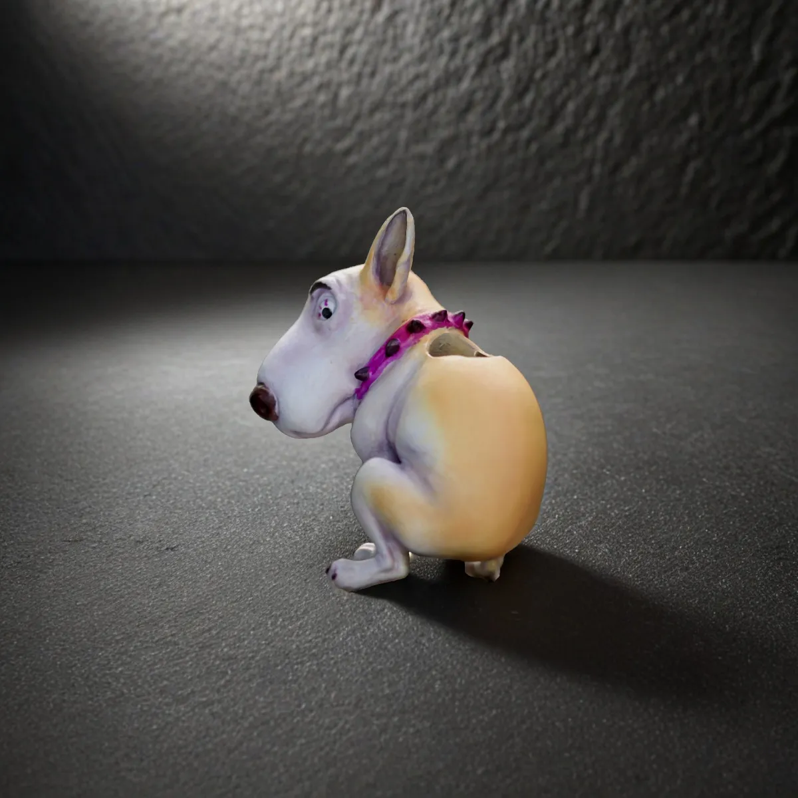
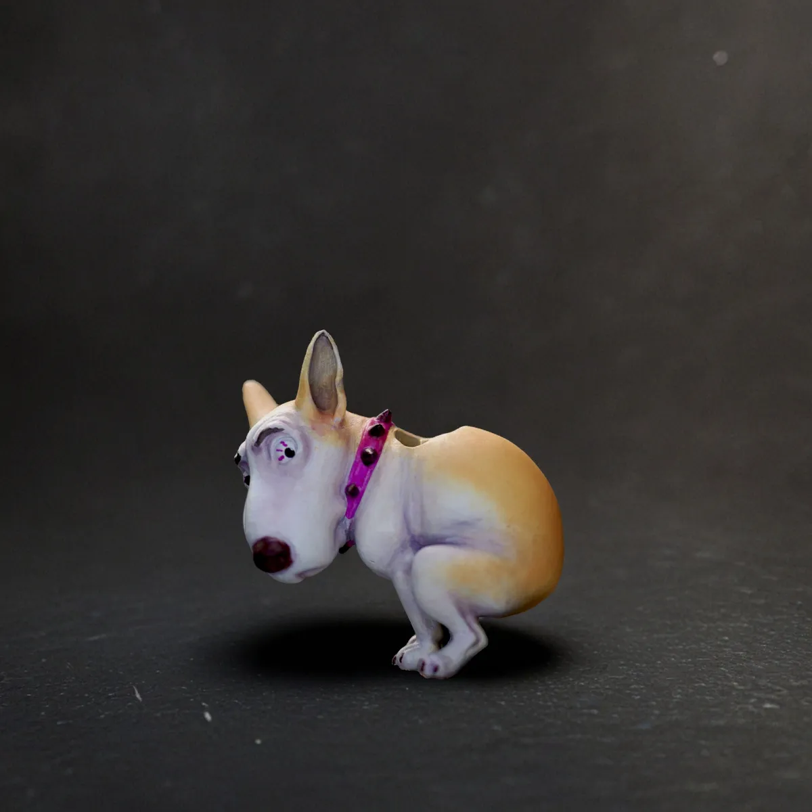

Темлячная бусина — это декоративный и функциональный элемент, который устанавливается на темляк ножа: шнур или петлю на рукояти. Проще говоря, это бусина на темляк или бусина для ножа, которая делает темляк заметнее, помогает увереннее ухватиться за нож и одновременно служит визуальным акцентом.
Такая бусина может улучшать хват, облегчать извлечение ножа из кармана или ножен и добавлять вещи индивидуальность. Чаще всего её ставят именно на темляк для ножа, в том числе на темляк из паракорда, но сама идея давно вышла за рамки чисто утилитарного аксессуара.
Сегодня темлячные бусины используют любители ножей, коллекционеры, те, кто делает темляки своими руками, и те, кому просто нравится маленькая пластика с характером. Ниже разберём, зачем нужна темлячная бусина, где она используется, какие бывают виды и из каких материалов такие вещи делают.
Зачем нужна темлячная бусина
Основная задача темлячной бусины — сделать использование темляка удобнее. За счёт формы, объёма и дополнительного веса бусину проще нащупать рукой, особенно если нож лежит глубоко в кармане, в ножнах или в подсумке.
Кроме того, бусина делает шнур заметнее и помогает быстрее ухватиться за темляк. Для многих важен и внешний вид: бусина на темляк превращает обычный шнур в законченную деталь ножевого комплекта и подчёркивает характер вещи.
На практике темлячная бусина может выполнять сразу несколько функций:
- улучшать хват — темляк с бусиной проще удерживать пальцами;
- облегчать извлечение ножа — особенно из кармана, подсумка или ножен;
- служить утяжелителем — темляк лучше ощущается рукой;
- дополнять стиль ножа — как декоративная бусина для ножа или заметная деталь повседневного комплекта.
Где используется темлячная бусина
Чаще всего такие бусины ставят именно на темляк для ножа, но этим применение не ограничивается. Их используют на темляках из паракорда, брелоках, подвесах, молниях рюкзаков, сумках и других предметах, где нужен небольшой акцент и удобный хватовой элемент.
В ножевой среде темлячная бусина помогает персонализировать нож, выделить его среди серийных моделей и сделать комплект более собранным визуально. Но для кого-то это не только утилитарная деталь, а ещё и маленькая фигурка, миниатюра или начало отдельной коллекции.
Поэтому темлячная бусина сегодня может восприниматься сразу по-разному: как бусина на нож, как бусина на темляк, как декоративная деталь для паракорда или как самостоятельный небольшой объект с характером.
Виды темлячных бусин
По форме и назначению темлячные бусины бывают очень разными. Одни делаются максимально простыми и утилитарными, другие — в виде минифигурок, масок, черепов, животных, персонажей или абстрактных скульптурных форм.
Условно их можно разделить на несколько групп:
- функциональные — с упором на хват и удобство использования;
- декоративные — когда важнее образ, стиль и визуальная подача;
- коллекционные — лимитированные или авторские миниатюры, которые ценят как самостоятельные объекты.
Если интересно, как такие изделия со временем превратились из чисто утилитарной детали в отдельное направление, посмотри статью об истории темлячных бусин.
Из каких материалов делают бусины
Материал влияет не только на внешний вид, но и на вес, тактильные ощущения и поведение бусины в повседневном использовании. Наиболее распространённые варианты — металл и смола.
Металл

Металлические бусины обычно тяжелее, прочнее и ощутимее в руке. Они хорошо подходят тем, кому важны фактура, вес и долговечность. Со временем металл может красиво меняться внешне, приобретая более живую поверхность.
Посмотреть примеры можно в разделе бусины из металла с патиной.
Металл с росписью

Это вариант для тех, кому нужна прочность металла, но при этом хочется более яркий и выразительный внешний вид. Такие бусины часто воспринимаются как небольшие художественные миниатюры.
Примеры таких моделей представлены в разделе металлические бусины с ручной росписью.
УФ-смола

Бусины из УФ-смолы обычно легче по весу и хорошо подходят для ярких цветных решений. Это удобный вариант, если нужен выразительный образ без лишнего утяжеления темляка.
Посмотреть изделия из этого материала можно в разделе бусины из УФ-смолы.
Как используется бусина на темляке ножа
Обычно бусину ставят на шнур из паракорда или другого подходящего материала. Она может располагаться в верхней части темляка, в средней зоне или ближе к концу — в зависимости от длины шнура и того, как именно человек привык удерживать нож.
Важно учитывать размер отверстия и толщину шнура: бусина на темляк должна надёжно сидеть, не болтаться слишком свободно и не мешать нормальному использованию ножа. Если речь идёт о темляке для ножа из паракорда, особенно важно заранее понимать толщину шнура и общий размер будущей сборки.
Если хочется перейти от теории к практике, посмотри подробную статью как сделать темляк для ножа.
Что делать дальше
Когда базовое понимание уже есть, следующий шаг зависит от задачи. Если нужен именно подбор, логично перейти к материалам, размеру и форме. Если хочется сделать темляк самому — к плетению, узлам и креплению бусины на паракорде.
- Как выбрать темлячную бусину
- Как сделать темляк для ножа
- Темлячные бусины и коллекционирование
- О мастерской 102%
Итог: нужна ли темлячная бусина
Темлячная бусина не является обязательной частью ножа, но во многих случаях делает использование темляка удобнее и приятнее. Она улучшает хват, помогает быстрее нащупать шнур и добавляет вещи индивидуальность.
Для кого-то это прежде всего функциональный элемент, для кого-то — декоративная деталь, а для кого-то — предмет коллекционирования. Всё зависит от того, какую задачу должен решать конкретный нож, темляк и как именно человек ими пользуется.
Посмотреть реальные примеры можно в каталоге темлячных бусин.
Что делать дальше
Если этот материал уже разобран, дальше лучше перейти к ближайшим связанным темам — без длинного списка и лишних повторов.
Частые вопросы о темлячных бусинах
Для чего нужна темлячная бусина?
Она делает темляк заметнее, улучшает хват, может облегчать извлечение ножа и одновременно служит декоративным элементом.
Это только украшение или есть практический смысл?
Не только украшение. Для многих пользователей темлячная бусина полезна именно как хватовой и утяжеляющий элемент на темляке ножа.
Подходит ли темлячная бусина для любого ножа?
Подходит для большинства ножей, у которых есть отверстие или точка крепления под темляк. Важно лишь подобрать подходящий размер бусины и шнура.
Подходит ли такая бусина для темляка из паракорда?
Во многих случаях да. Нужно учитывать диаметр отверстия в бусине, толщину паракорда и то, как именно будет собран темляк для ножа.
Можно ли использовать бусину без ножа?
Да. Такие бусины часто используют как брелоки, подвесы на рюкзак, аксессуары для паракорда и небольшие декоративные элементы.
Другие статьи по теме смотри в блоге мастерской.